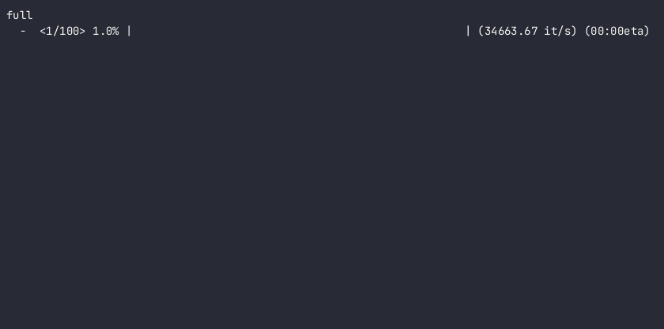

fancybar¶
fancybar is a highly customizable terminal progress bar library. Usage is very simple:
You can also create a bar without an iterable: .. code_block:: python
import fancybar bar = fancybar.ProgressBar(100) with bar:
# Do something
Bar Types¶
Please note that not all bar types will work on all terminals!